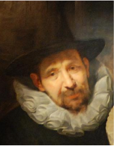

Jan Brueghel the Elder

- Jan Brueghel the Elder (1568-1625) was a Flemish painter who is best known for his still life paintings, landscapes, and allegorical works. He was born in Brussels, the son of the famous painter.
- Jan Bruegel the Elder became known for his small-scale paintings of flowers, fruit, and animals, which were popular in the wealthy households of his time. His works are characterized by their meticulous attention to detail and vibrant colors.
- Jan Brueghel the Elder died in Antwerp in 1625, leaving behind a legacy as one of the greatest painters of the Flemish Baroque period.